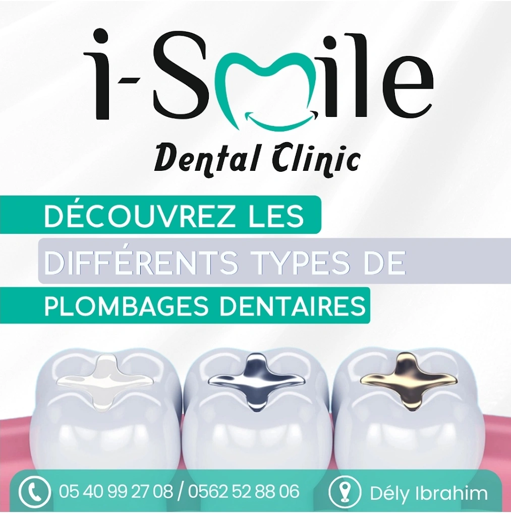
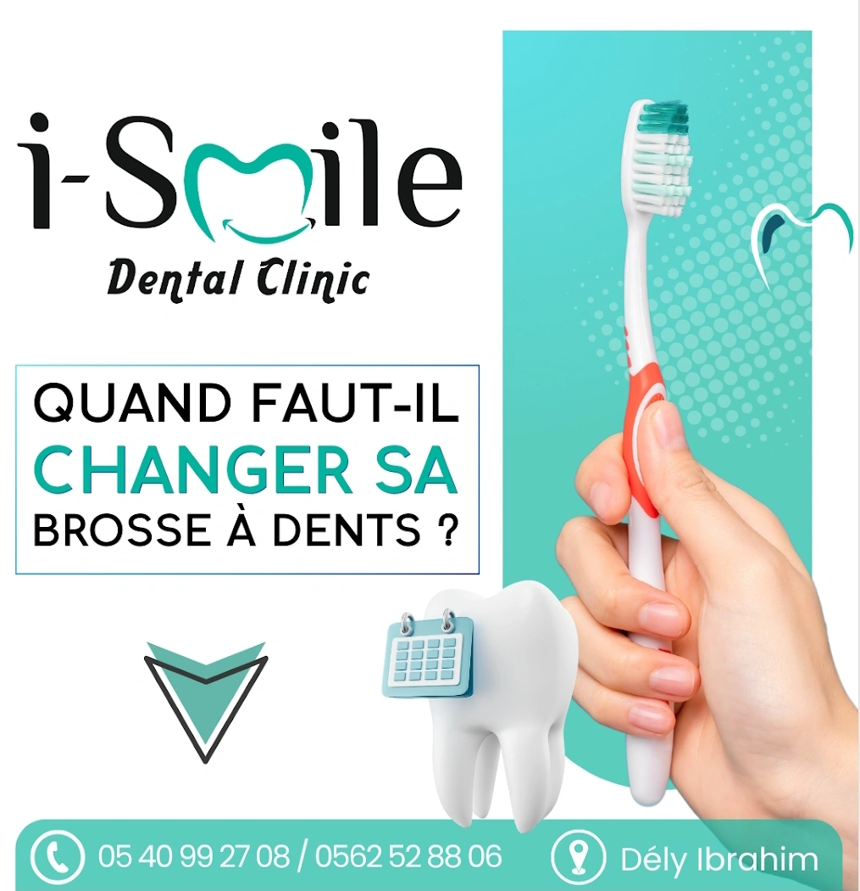
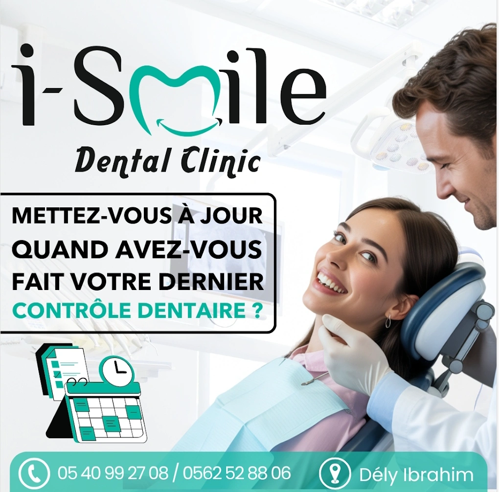
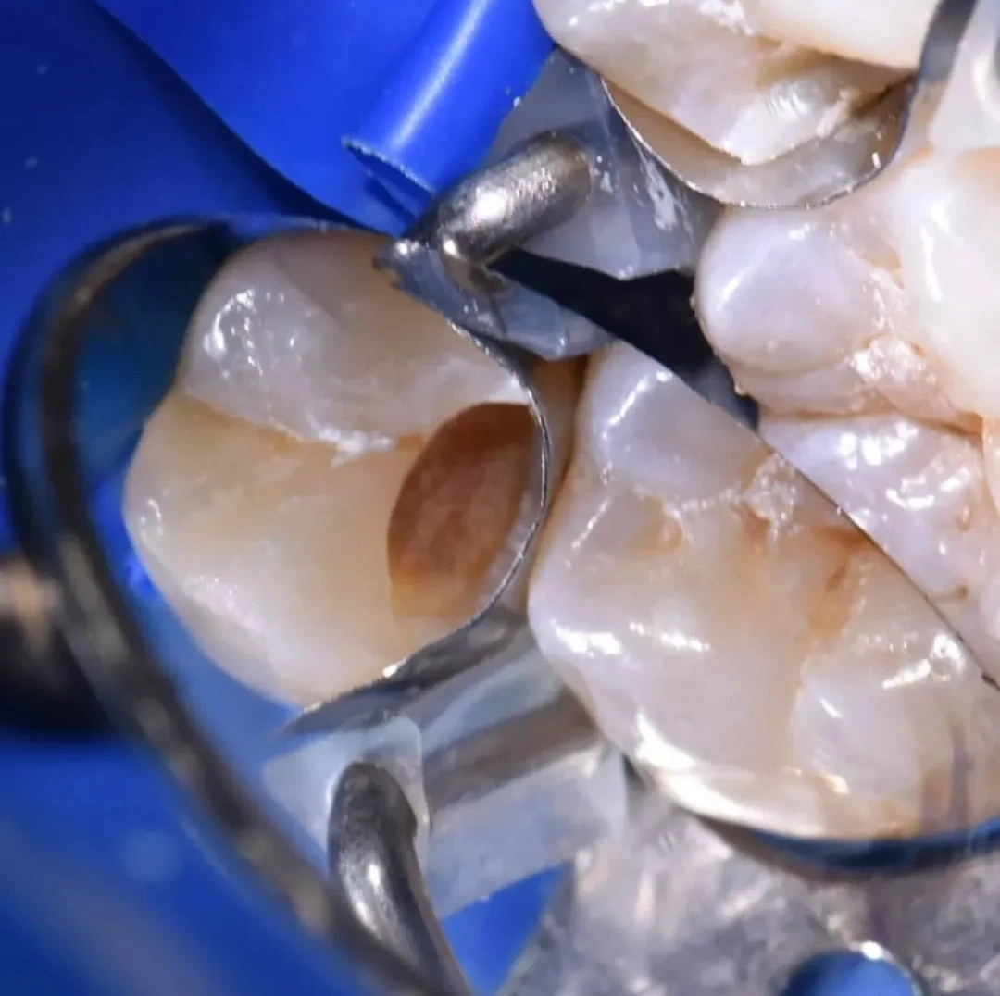
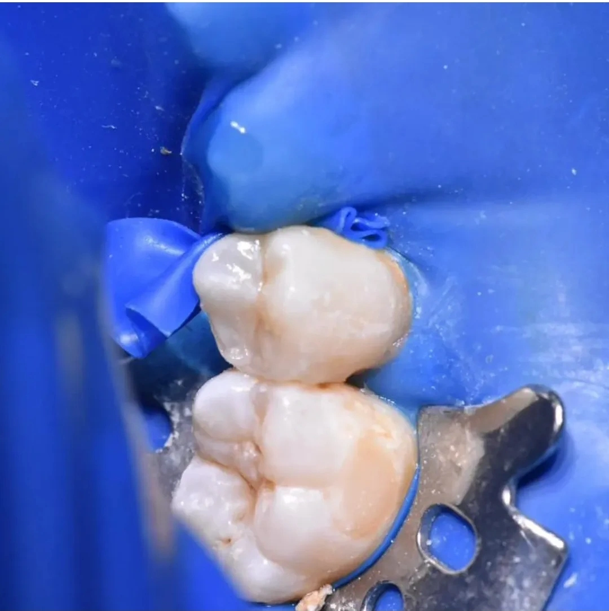
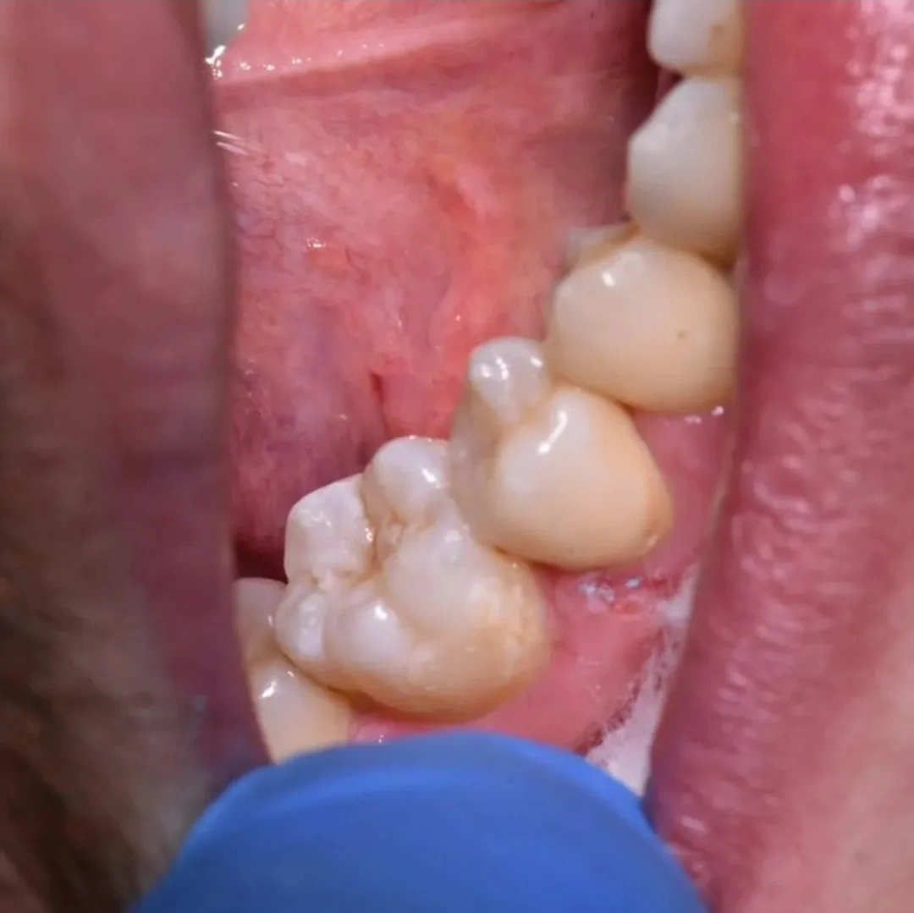

Occlusodontie
I Smile Dental Clinic
Une prise en charge personnalisée des déséquilibres de l’occlusion pour contribuer à votre confort dentaire.
Une prise en charge personnalisée des déséquilibres de l’occlusion pour contribuer à votre confort dentaire.

L’occlusodontie s’intéresse à l’équilibre entre les dents, les mâchoires et les mouvements de la bouche.
À I Smile Dental Clinic, l’occlusodontie permet d’étudier les relations entre les arcades dentaires et les éventuels déséquilibres pouvant affecter le confort.
L’évaluation prend en compte la situation de chaque patient afin de mieux comprendre les besoins fonctionnels et d’orienter la prise en charge.
Une consultation permet d’échanger sur les symptômes ressentis et de déterminer les examens ou soins nécessaires.
Une prise en charge attentive pour mieux comprendre et accompagner les besoins de chaque patient.
Chaque situation est étudiée avec attention afin d’identifier les déséquilibres éventuels.
L’objectif est de prendre en compte les relations entre les dents et les mouvements de la mâchoire.
L’équipe vous accompagne avec une approche claire, progressive et adaptée à votre situation.
Découvrez les visuels associés à l’occlusodontie et aux soins dentaires du service.





Quelques vues du cabinet pour découvrir l’univers de la clinique.


Contactez-nous par téléphone ou WhatsApp pour obtenir des informations complémentaires.